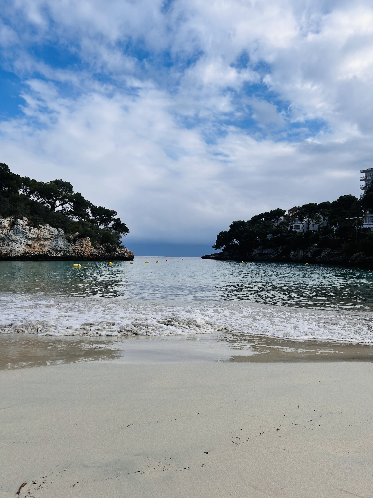
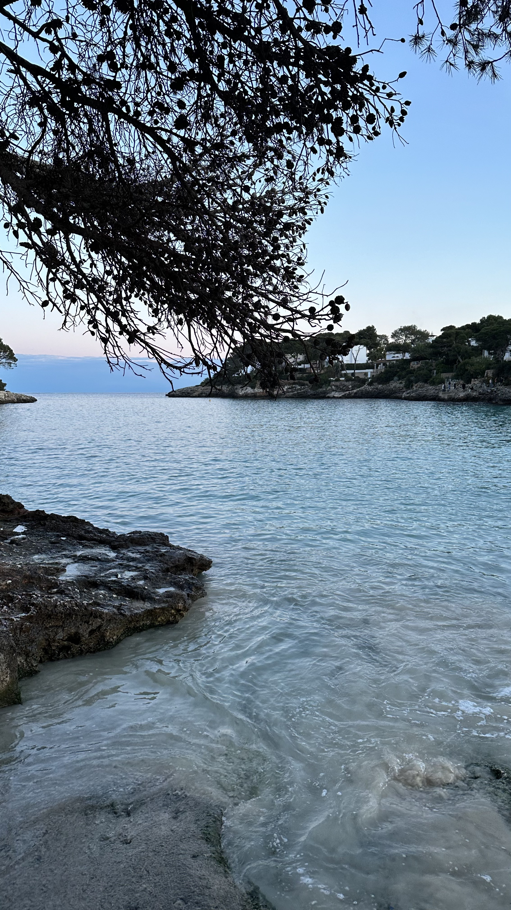
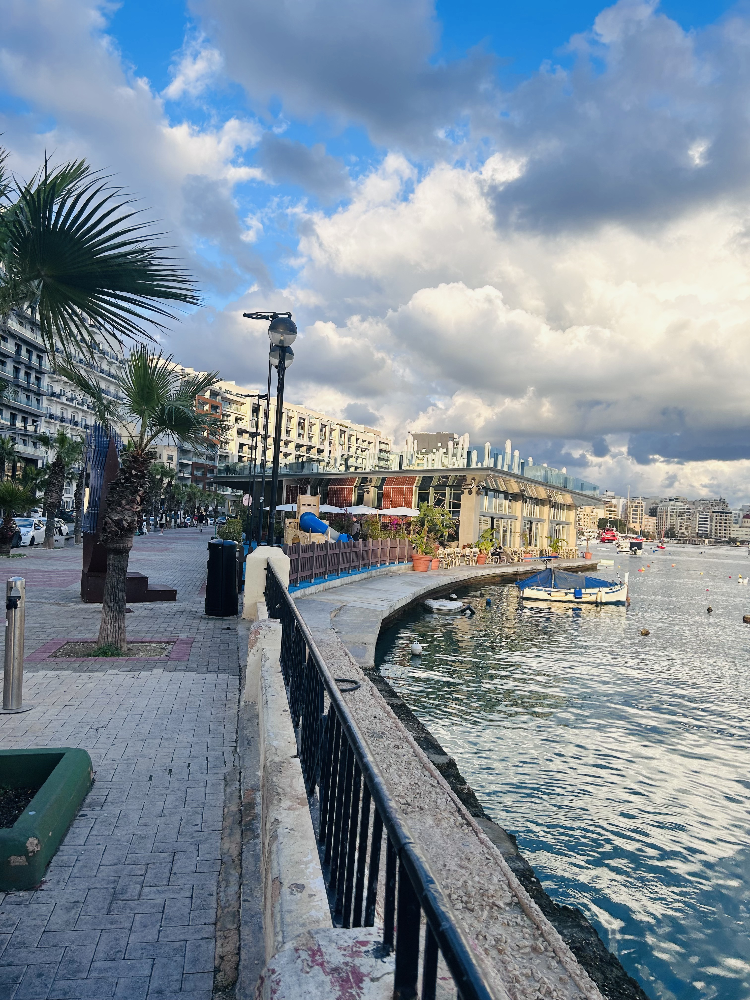
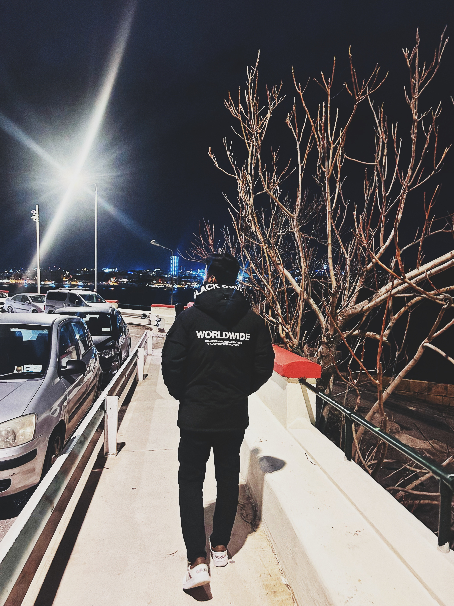
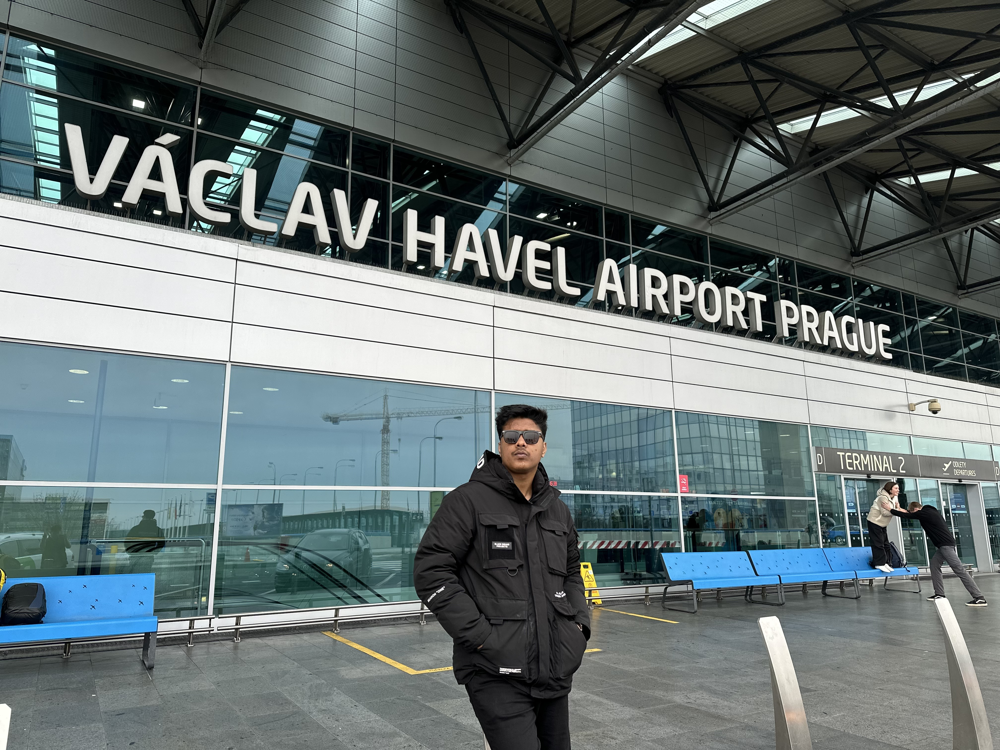
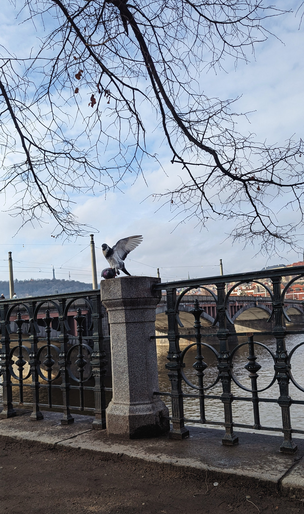
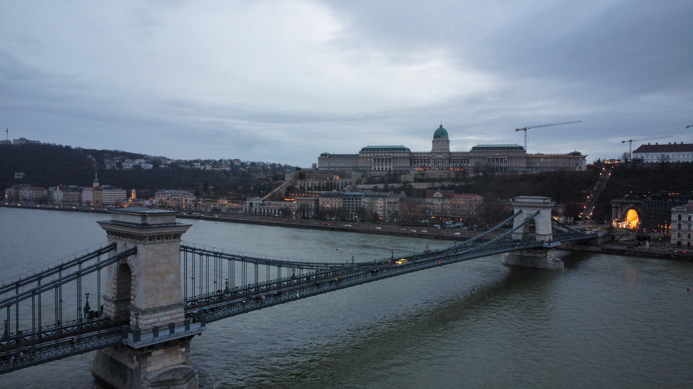
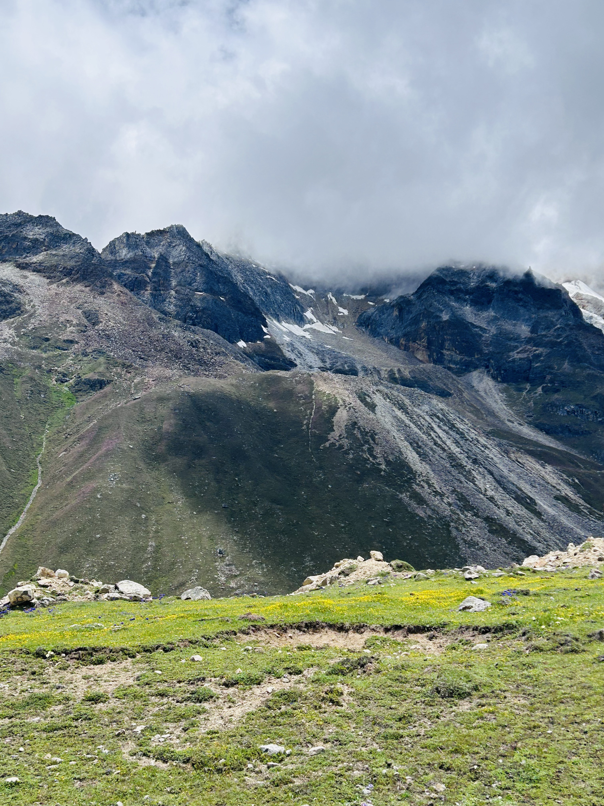
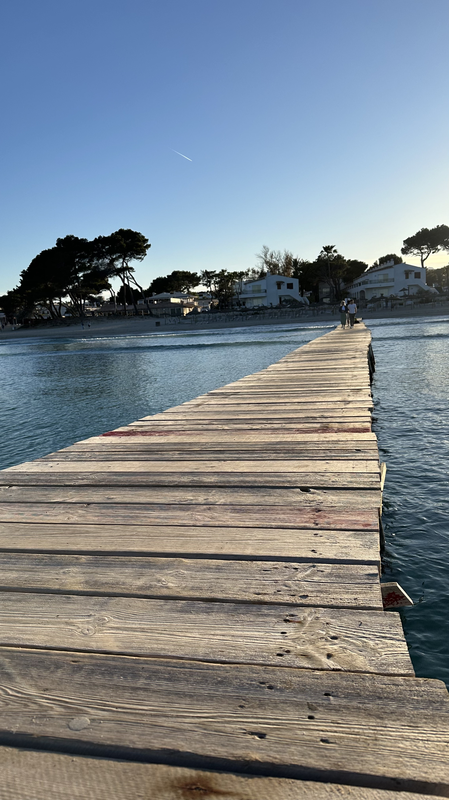
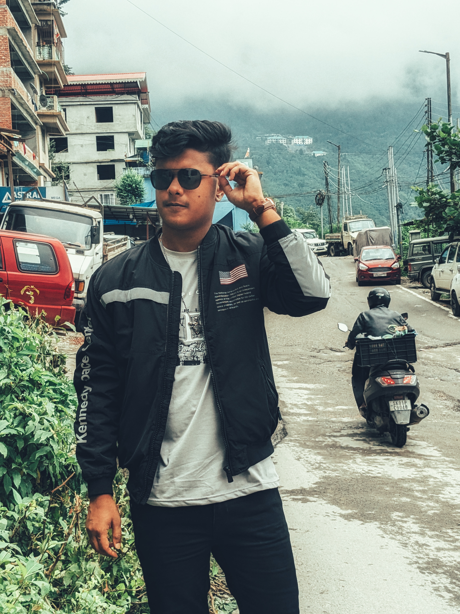

A memorable journey through Palma de Mallorca, discovering the beauty of the island,
Mediterranean landscapes, historic streets, and the unique culture of Spain.


Visiting Palma de Mallorca was an unforgettable experience filled with stunning
views, beautiful beaches, and the charm of Spanish culture. From exploring the
historic streets of Palma to enjoying the peaceful Mediterranean atmosphere,
every moment captured the beauty and lifestyle of the island.
This journey was a perfect combination of adventure, relaxation, and discovery,
creating memories that will always be remembered.
“Every destination has a story, and Palma de Mallorca was a chapter worth remembering.”
🇲🇹 Exploring Valletta, Malta
20.10.2024
A memorable journey to Valletta, Malta — exploring the historic capital,
beautiful coastal views, and the unique charm of Mediterranean culture.


Visiting Valletta was an unforgettable experience filled with history,
architecture, and breathtaking Mediterranean scenery. Walking through the
old streets of Malta’s capital, discovering its historic landmarks, and
enjoying the sea views created a perfect balance of exploration and
relaxation.
The combination of culture, beautiful landscapes, and the peaceful island
atmosphere made this journey a special memory.
“Every place has its own story, and Valletta was a journey through history and beauty.”
🇨🇿 Exploring Prague, Czech Republic
15.05.2025
A beautiful journey to Prague, exploring the historic heart of the Czech Republic,
its stunning architecture, charming streets, and unforgettable atmosphere.


Visiting Prague was an amazing experience filled with history, culture, and
breathtaking views. Walking through the old town, exploring the beautiful
architecture, and experiencing the unique atmosphere of the city made the
journey unforgettable.
From the historic streets to the famous landmarks, Prague showed a perfect
combination of tradition, beauty, and modern European life.
“Some cities are visited, but some cities leave a lasting memory.”
🇭🇺 Exploring Budapest, Hungary
18.05.2025
A memorable journey to Budapest, discovering the beauty of Hungary’s capital,
its historic landmarks, stunning architecture, and the charm of the Danube River.

Visiting Budapest was a wonderful experience filled with beautiful views,
rich history, and unforgettable moments. Exploring the streets, admiring
the architecture, and walking along the Danube River revealed the unique
character of the city.
The combination of culture, history, and the vibrant atmosphere made
Budapest one of the most memorable destinations of the journey.
“A city full of history, beauty, and moments worth remembering.”
🇮🇳 Exploring the Beauty of Kolkata, Sikkim & Darjeeling
15.12.2024
A beautiful journey through Kolkata, Sikkim, and Darjeeling — experiencing the
cultural richness of the city, the peaceful charm of the Himalayas, and the
breathtaking landscapes of Northeast India.



This journey through Kolkata, Sikkim, and Darjeeling was an unforgettable
combination of culture, adventure, and nature. The trip started in Kolkata,
where I explored the vibrant city life, historic places, and rich traditions.
Continuing towards Sikkim and Darjeeling, the experience changed from busy
city streets to peaceful mountains, beautiful valleys, and breathtaking
Himalayan views. The natural beauty, local culture, and calm environment
made every moment special.
This journey was a perfect reminder of how travel connects us with different
places, people, and unforgettable experiences.
“From the energy of the city to the silence of the mountains — every place tells a story.”